Jungwoo Hong · github.com/hsleejw21/historical_ledger_extraction
An exploratory analysis of a multi-century accounting ledger (c. 1700–1900), examining how transaction volumes, monetary amounts, account categories, and recorded vocabulary changed across the First Industrial Revolution (1760–1840).
experiments/results/ledger.xlsxyear_page_image and year-year_page_imageheader, entry, totalentry + total rows| Metric | Value |
|---|---|
| Years covered | 196 |
| Data rows (entry + total) | 49,187 |
| Header rows | 6,516 |
| Unique normalized header/account texts | 2,917 |
Sheet names encode both the year and page number (e.g., 1760_3_image = year 1760, page 3). Some sheets span two years (e.g., 1759-1760_1_image), so rows from those sheets are assigned a fractional weight of 0.5 when aggregating by year, so that no year is double-counted. Each row carries a type tag — header, entry, or total. Currency values were parsed from historical formats (pounds, shillings, pence) and converted to decimal pounds. Text fields were lowercased and stripped of punctuation for downstream analysis.
For each calendar year we computed four complementary metrics: total amount (sum of all transaction values, capturing overall scale), median transaction amount (capturing the typical individual entry, robust to outliers), 90th-percentile amount (capturing the upper tail of the distribution), and row count (the number of entry and total rows, a proxy for recording activity). Using several metrics together guards against any single outlier distorting the picture.
Year-over-year deltas were computed for each numeric metric. Rather than a standard z-score (which assumes a normal distribution and is pulled by outliers), we applied a robust z-score based on the median and median absolute deviation (MAD). This is more appropriate for historical time series that may have long stable stretches interrupted by sudden structural breaks. Years whose robust z-score exceeded a threshold were flagged as candidate change points.
Rows of type header label account sections within the ledger (e.g., names of merchants, commodity types, or ledger categories). We recorded the first and last year each unique header text appeared, the total number of occurrences, and how many distinct header texts appeared in each year. A growing count of unique headers per year is used as a proxy for increasing organizational complexity — reflecting the opening of new account types to track new economic activities.
Why TF-IDF + SVD? The ledger text is a mixture of Latin and early modern English, which poses a challenge for off-the-shelf embedding models. The ideal approach would be a hybrid neural embedding — for example, LatinBERT for Latin phrases combined with a multilingual sentence-transformer for English content. This is scaffolded in experiments/hybrid_year_text_embeddings_ledger.py in the repository. However, downloading pretrained transformer weights was blocked by network constraints during this analysis run, so we used TF-IDF (Term Frequency–Inverse Document Frequency) as a robust, network-free baseline. TF-IDF weights each term by how frequently it appears in a document relative to how common it is across the whole corpus, which works well for surfacing historically distinctive vocabulary. Truncated SVD (Latent Semantic Analysis) then reduces the high-dimensional TF-IDF matrix to a dense 50-dimensional embedding, capturing latent co-occurrence patterns before clustering.
Year-level vs page-level aggregation: We tested clustering both at the year level (all text in a given year merged into one document) and at the page level (each individual ledger page as its own document). Year-level aggregation is more stable: averaging across many pages within a year smooths out page-specific noise and OCR artefacts. The silhouette scores confirm this — year-level achieves 0.007 while page-level reaches −0.029.
Cluster count selection: The optimal number of clusters k was chosen by computing the average silhouette score for k = 2 … 10 and selecting the value that maximised it.
| Era | Years | Mean amount_sum | Median of amount_median | Mean data rows |
|---|---|---|---|---|
| pre_1760 | 60 | 5,914.42 | 2.07 | 191.52 |
| industrial_1760_1840 | 81 | 26,864.15 | 9.00 | 213.86 |
| post_1840 | 55 | 111,881.29 | 8.18 | 238.98 |
| Year | Delta | Robust Z |
|---|---|---|
| 1891 | +435,519.02 | 72.65 |
| 1892 | -388,040.79 | 64.64 |
| 1894 | -273,316.23 | 45.29 |
| 1880 | -217,770.44 | 35.92 |
| 1879 | +189,947.10 | 31.23 |
| Unit | n_units | k | Silhouette | Embedding |
|---|---|---|---|---|
| year | 196 | 2 | 0.0066 | TF-IDF + SVD |
| page | 1580 | 12 | -0.0288 | TF-IDF + SVD |
The top panel shows the total monetary amount recorded each year (in decimal pounds). The bottom panel shows the number of data rows (entry + total) per year. Together, they reveal how both the scale of transactions and the volume of recorded activity changed over the 196-year span. A clear upward trend in amount from the Industrial Revolution period onward is visible, with the sharpest growth in the late 19th century. Notably, row count grows more slowly than total amount, suggesting that the increase in monetary scale reflects larger individual transactions rather than simply more entries being recorded.
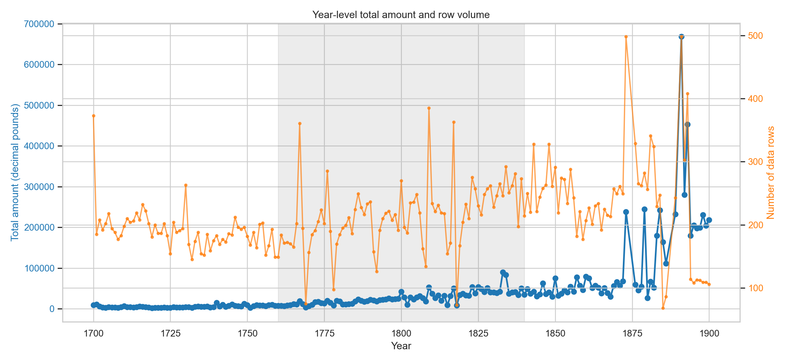
While total amount captures overall scale, median and p90 describe the shape of the transaction distribution. The median is robust to outliers — a rising median means that typical transactions grew larger, not just a handful of extreme entries. The 90th percentile (p90) shows how the upper tail evolved: if p90 grows faster than the median, the distribution is becoming more right-skewed (a few very large transactions pulling up the total). Comparing these two lines helps distinguish broad-based growth from outlier-driven spikes.
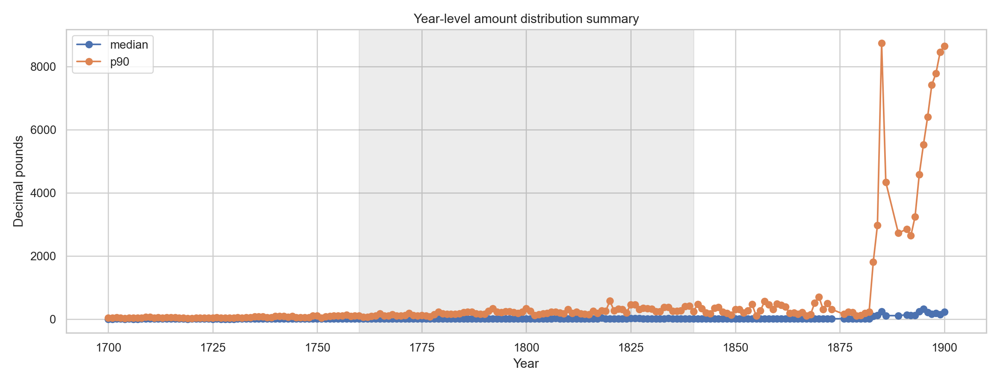
This chart flags years where the year-over-year change in total amount was statistically unusual. The grey line shows the raw year-over-year delta; the coloured markers highlight years whose robust z-score (delta − median delta) / MAD exceeded the detection threshold. Using MAD instead of standard deviation makes the detector resistant to the long-run upward trend in amounts. The most prominent breaks appear in the 1870s–1890s — specifically, a large positive spike in 1891 followed by reversals in 1892 and 1894 — suggesting either economic disruptions (e.g., commodity price volatility, a major single transaction) or a reorganisation of how the accounts were structured in those years.
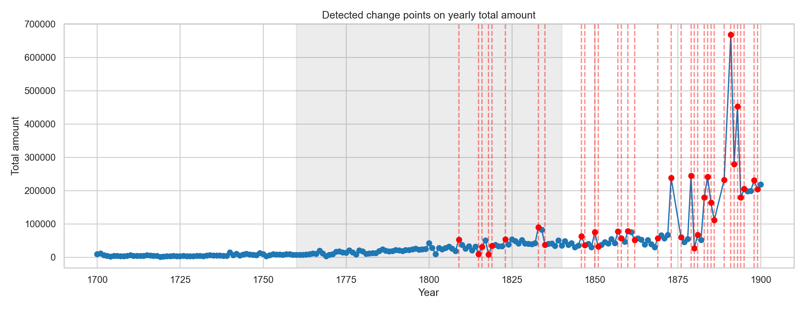
Boxplots compare the distribution of yearly total amounts across three historical eras: pre-Industrial Revolution (before 1760), the Industrial Revolution period (1760–1840), and the post-Industrial period (after 1840). The box spans the interquartile range (25th–75th percentile), the line inside is the median, and the whiskers extend to 1.5× IQR. The post-1840 era has a dramatically higher median and much wider spread, consistent with industrialisation and expanding commerce. The Industrial Revolution era itself shows a roughly 4.5× increase over the pre-1760 era in mean total amount, indicating that economic growth during 1760–1840 was already substantial, even before the post-1840 acceleration.
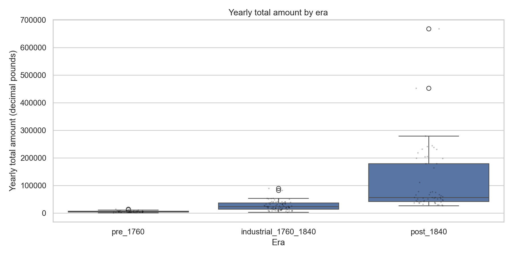
This plot tracks two quantities per year: the total number of header rows (grey bars) and the number of unique header texts (line). A growing number of unique headers suggests that bookkeeping categories were expanding — new types of accounts, merchants, or commodity categories were being opened and recorded. A gap between total header rows and unique headers indicates that the same categories were re-used many times within a year (i.e., recurring accounts). This is a proxy for organisational complexity and the diversification of economic activity over time. A sharp rise in diversity around or after 1760 would be consistent with the Industrial Revolution prompting new forms of commercial organisation.
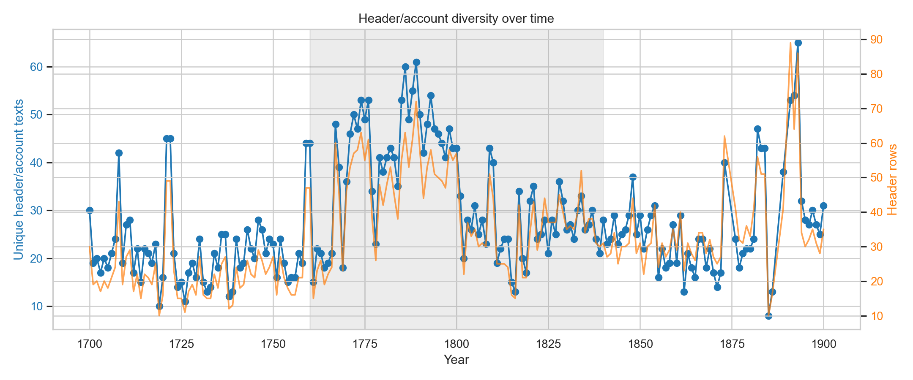
This heatmap shows the most distinctive words (from entry and total row text) in each historical era, scored by TF-IDF. Each column is one era; each row is a term. Darker cells indicate that a term is more distinctive for that era relative to the corpus overall. The ledger mixes Latin and early modern English, so terms may include Latin accounting phrases (e.g., recepi, solvi) alongside English commodity or place names. Terms that appear dark in the Industrial Revolution column but light in the pre-1760 column suggest genuinely new economic vocabulary, whereas terms dark in all columns are general ledger boilerplate.
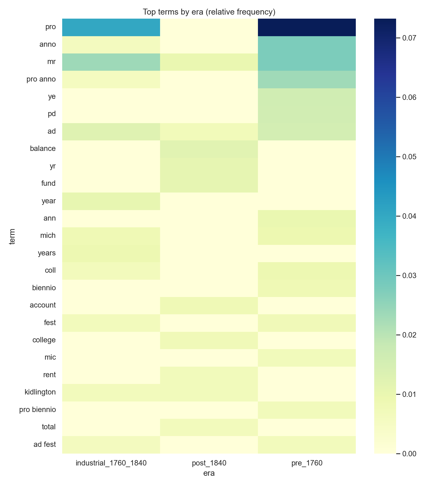
This chart highlights terms whose relative frequency increased the most between successive eras. The emergence score is computed as the ratio of normalised term frequency in the later era to the earlier era (log-scaled). Terms with the highest scores in the pre→industrial transition may indicate new economic activities or vocabulary entering the ledger during industrialisation. Terms emerging in the industrial→post transition capture the linguistic footprint of later 19th-century commerce. Because TF-IDF is used, common stop-words and ledger boilerplate are down-weighted; the most prominent emerging terms tend to be substantive nouns or verbs tied to specific economic activities.
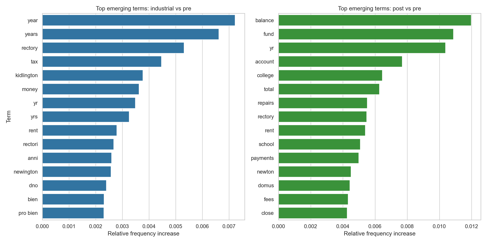
Using TF-IDF+SVD embeddings aggregated at the year level, KMeans clustering (k=2, selected by silhouette score) assigns each year to one of two text clusters. This timeline shows how cluster membership evolved over the 196-year span. Persistent membership in one cluster across a stretch of years suggests stable recording conventions and vocabulary; a switch to the other cluster signals a shift in the types of descriptions used. The fact that only k=2 clusters are needed at the year level — rather than many — indicates that, at this level of aggregation, the ledger's text separates into two broad regimes rather than many fine-grained categories. Whether this split aligns with the historical era boundary (1760 or 1840) can be checked against the cluster-by-era heatmap below.
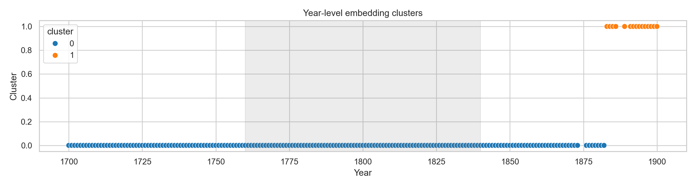
This heatmap cross-tabulates text cluster membership (rows) against historical eras (columns). Each cell shows the count of years falling into that cluster–era combination. Strong diagonal concentration (most of one cluster in one era) would indicate that the TF-IDF vocabulary shifts align neatly with the historical turning points of 1760 and 1840. Spread across clusters within a single era suggests that textual variation within that era is larger than the variation between eras — which may reflect gradual change rather than sharp transitions, or may reflect limitations of the current TF-IDF approach (motivating the planned LatinBERT hybrid embedding).
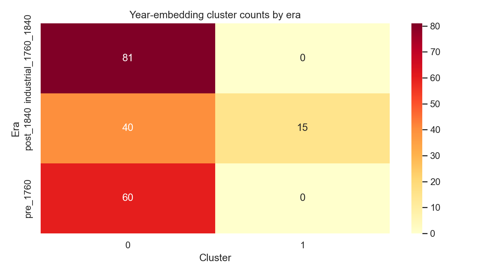
Principal Component Analysis (PCA) projects the 50-dimensional TF-IDF+SVD year embeddings down to 2D for visual inspection. Each point is one year, coloured by KMeans cluster. The two axes capture the directions of greatest variance in the embedding space. Tight, well-separated clusters would indicate strong textual differentiation between groups of years; heavily overlapping points reflect continuous or gradual change. The spread along the first principal component often corresponds to the dominant long-run trend in vocabulary.
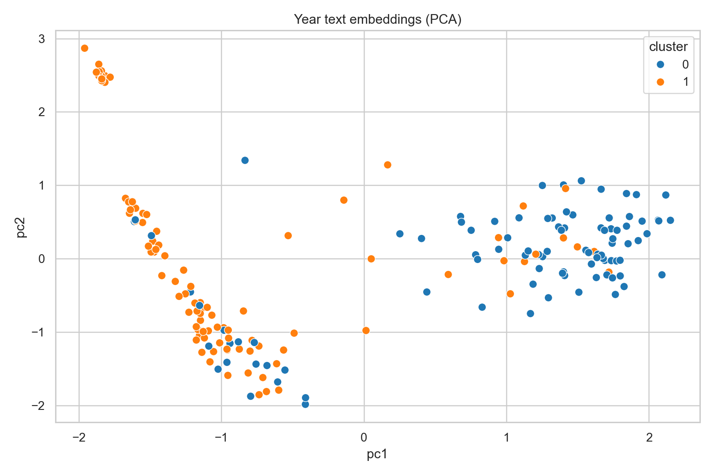
The same PCA projection applied at the page level — each of the 1,580 pages becomes a separate document. The substantially lower silhouette score (−0.029 vs 0.007 at year level) tells us that individual pages cluster poorly by text content alone. This makes sense: a single ledger page contains only a small number of entries, so its TF-IDF vector is sparse and dominated by whichever few terms happen to appear. Aggregating to the year level averages over this sparsity, producing denser and more comparable embeddings. This finding supports the choice to use year-level aggregation as the primary analysis unit.
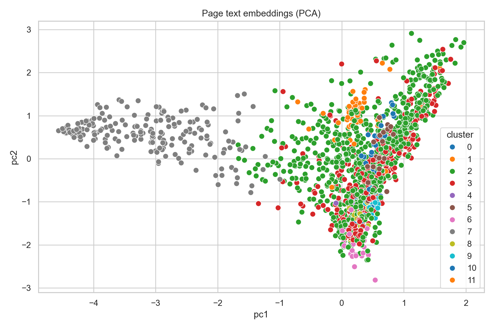
Cluster label per year over time, produced by the compare_unit_text_clustering_ledger.py script which ran the year-level and page-level experiments side by side. This version uses the same TF-IDF+SVD pipeline but is computed independently, providing a cross-check on the main analysis. Comparing this with the timeline above confirms that the cluster assignments are stable across script runs.
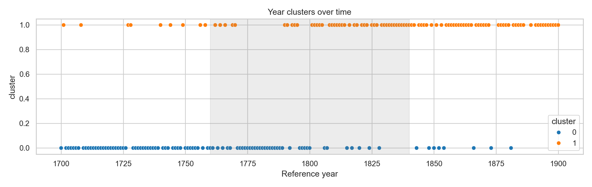
Cluster label per page over time, from the page-level TF-IDF clustering run in the comparison script. At the page level the silhouette-optimal k is 12 — far more clusters than at the year level — yet the silhouette score is still negative (−0.029), meaning the clusters are not well-separated. The rapid switching of cluster labels from page to page reinforces that individual pages are too short and sparse for stable TF-IDF clustering. This timeline illustrates why page-level text analysis alone is insufficient, and motivates either year-level aggregation or a better embedding (e.g., the planned LatinBERT hybrid).
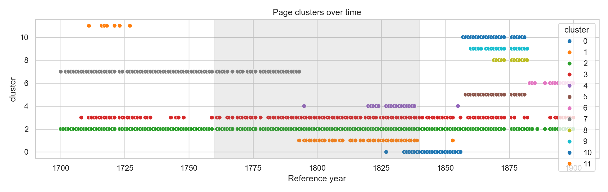